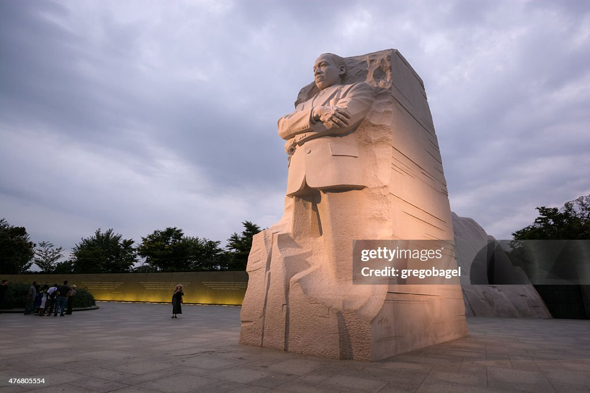

A pivotal leader in the American civil rights movement

The Martin Luther King Jr. memorial located in Washington, DC.
About Dr. Martin Luther King Jr.
Dr. Martin Luther King Jr. was a Baptist minister and social activist who played a key role in the American civil rights movement from the mid-1950s until his assassination in 1968. Inspired by advocates of nonviolence such as Mahatma Gandhi, King sought equality for African Americans, the economically disadvantaged, and victims of injustice through peaceful protest.
Key Achivements
1955 - Montgomery Bus Boycott: King became a prominent leader in the civil rights movement when he led the Montgomery Bus Boycott after Rosa Parks was arrested for refusing to give up her seat to a white passenger. The boycott lasted for 381 days and ended with a Supreme Court ruling that segregation on public buses was unconstitutional.
1957 - Southern Christian Leadership Conference (SCLC): King co-founded the SCLC, an organization that aimed to harness the moral authority and organizing power of Black churches to conduct nonviolent protests in the service of civil rights reform.
1960 - Sit-In Movement: King supported and became a prominent figure in the sit-in movement initiated by four African American college students in Greensboro, North Carolina. The movement spread rapidly, leading to the desegregation of lunch counters and other public spaces.
1963 - Birmingham Campaign:King led the Birmingham campaign, a series of nonviolent protests against segregation in Birmingham, Alabama. The campaign included sit-ins, marches, and boycotts, which were met with violent resistance by authorities. King's "Letter from Birmingham Jail" was written during this time.
- March on Washington:King delivered his iconic "I Have a Dream" speech during the March on Washington for Jobs and Freedom on August 28, 1963. The speech, delivered in front of the Lincoln Memorial, called for an end to racism and for civil and economic rights.
1964 - Civil Rights Act of 1964:King's efforts were instrumental in the passage of the Civil Rights Act, which prohibited discrimination based on race, color, religion, sex, or national origin. This landmark legislation also ended segregation in public places and banned employment discrimination.
- Nobel Peace Prize:On December 10, 1964, King was awarded the Nobel Peace Prize for his nonviolent struggle for civil rights. At the age of 35, he became the youngest person to receive the prize.
1965 - Selma to Montgomery Marches: King led three marches from Selma to Montgomery, Alabama, to advocate for African American voting rights. These marches were pivotal in the passage of the Voting Rights Act of 1965, which aimed to eliminate barriers to voting for African Americans.
- Voting Rights Act of 1965:
King's advocacy and leadership were key in the passage of this Act, which outlawed discriminatory voting practices that had been responsible for widespread disenfranchisement of African Americans.
1966 - Chicago Campaign: King moved the civil rights struggle to the North with the Chicago Freedom Movement, which sought to address housing discrimination, poverty, and economic inequality in northern cities. The campaign faced significant challenges but brought national attention to issues of racial inequality beyond the South.
1967 - "Beyond Vietnam" Speech: On April 4, 1967, King delivered a powerful speech at Riverside Church in New York City, where he publicly opposed the Vietnam War. He linked the war with the struggle for civil rights and criticized the U.S. government for its role in perpetuating violence abroad while failing to address social injustice at home.
- Poor People's Campaign: King began organizing the Poor People's Campaign to address economic injustice and poverty in the United States. The campaign aimed to bring together poor people of all races to demand better economic opportunities and living conditions.
1968 - Assassination: On April 4, 1968, Dr. Martin Luther King Jr. was assassinated in Memphis, Tennessee, while supporting striking sanitation workers. His death sparked riots in many cities across the U.S. and led to a period of national mourning.
- Posthumous Honors-Martin Luther King Jr. Day:In 1983, President Ronald Reagan signed a bill creating a federal holiday to honor Dr. King. Martin Luther King Jr. Day is observed on the third Monday of January each year.
Legacy
Dr. King’s leadership was fundamental to ending legal segregation in the United States and he remains an enduring symbol of the struggle for justice and equality. His work continues to inspire movements for civil rights and social justice worldwide.